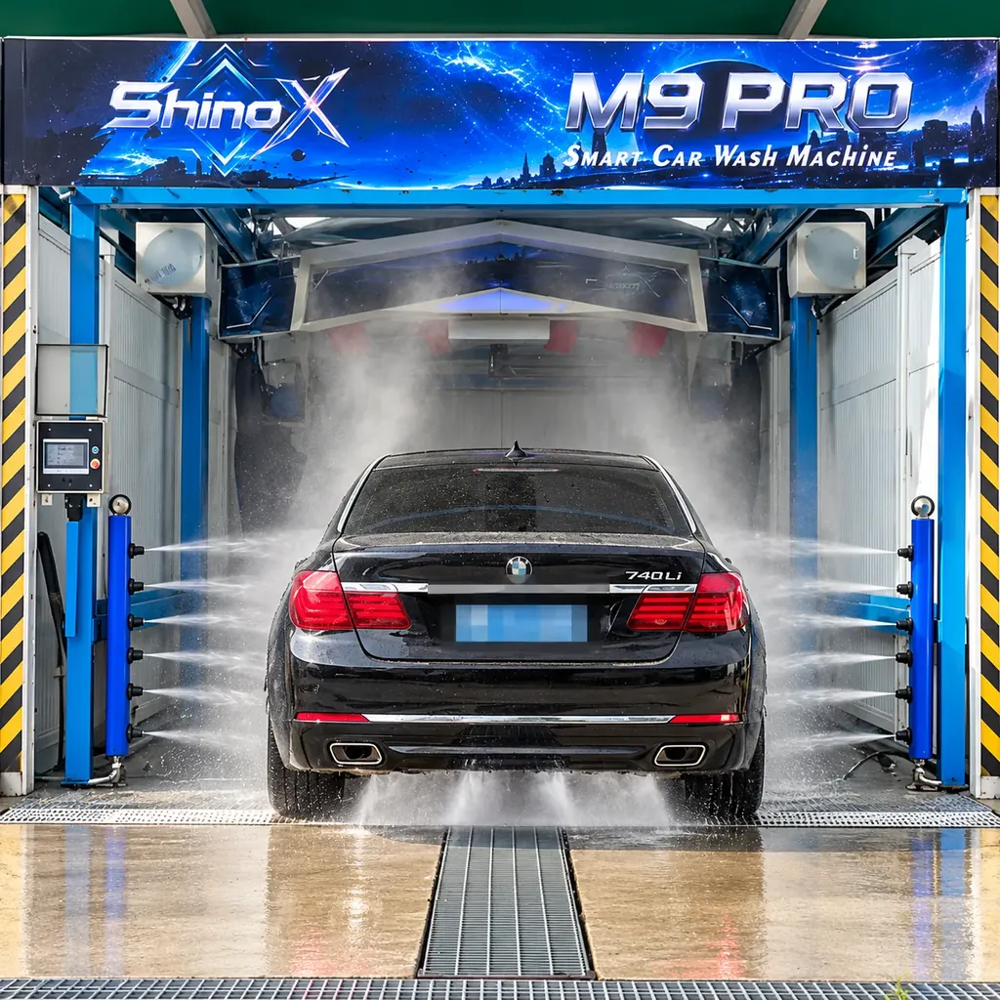
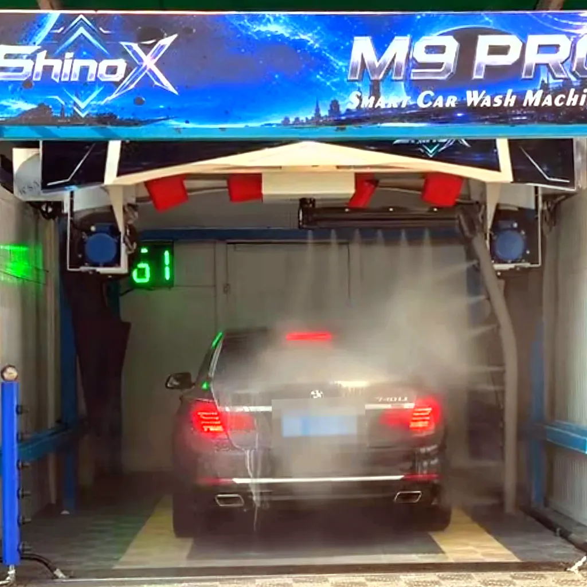
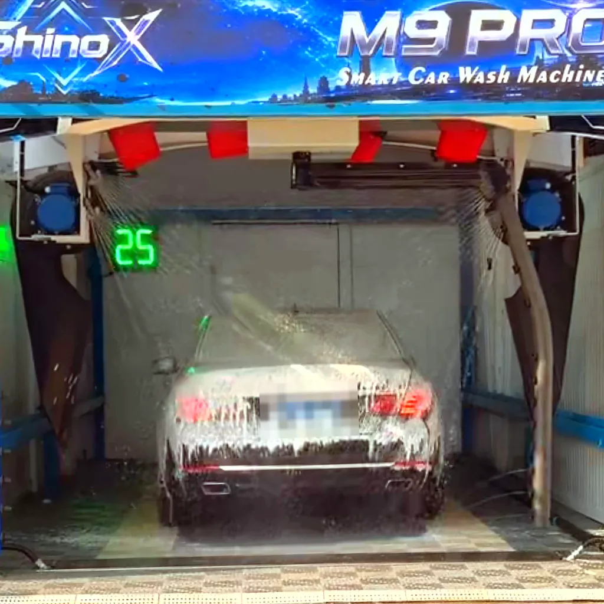
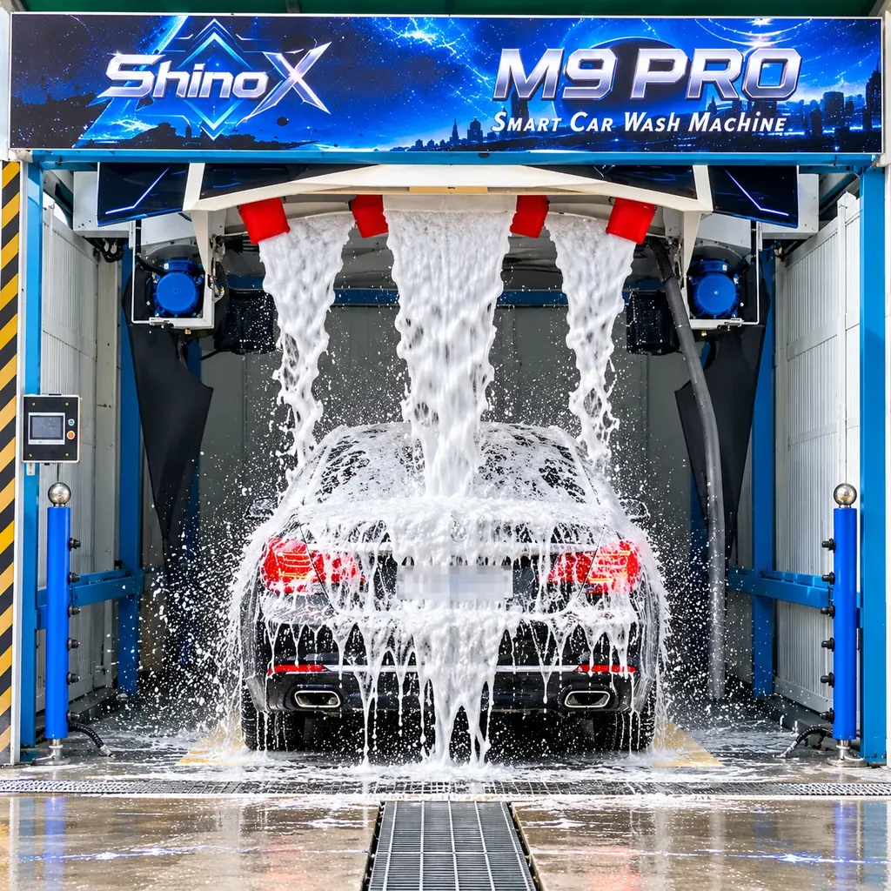
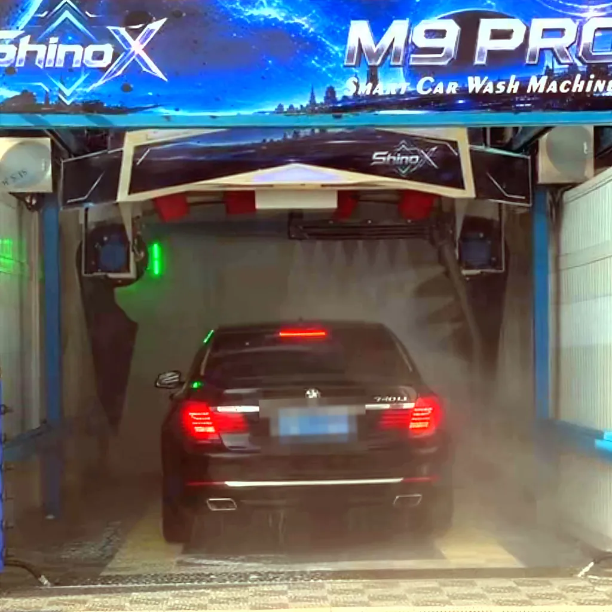
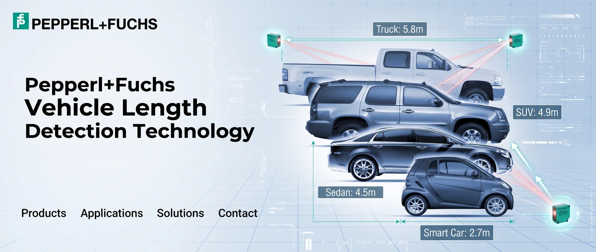
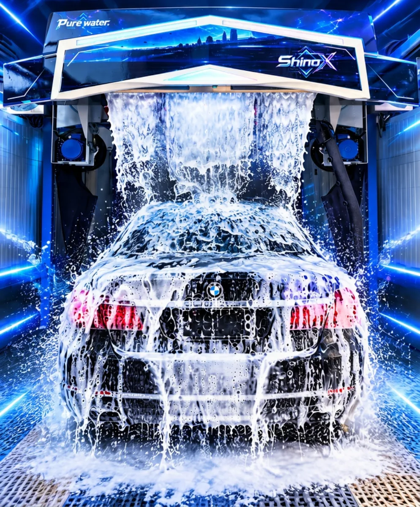

360° touchless rinse
304 stainless-steel rotary arm, length-measured and underbody rinse.
M9 / SINGLE-ARM 360° TOUCHLESS
360° touchless automatic car wash
Single-arm 360° surround rinse in Standard, Plus and Premium configurations.
Quick wash about 2 min, deep wash about 6 min; 0.5–0.8 kWh and 100–200 L of water per car. Ready for 24-hour self-service.

01 / OVERVIEW
ShinoX M9 is a high-end, single-arm 360° touchless automatic car wash. A 304 stainless-steel rotary arm rinses around the car, with length measurement, underbody rinse and a 28 s ring rinse. Servo drives handle travel and rotation, and ultrasonic sensors detect the vehicle.
Three configurations are available: Plus and Premium add side rinse and side air drying, and Premium adds a top swing dryer, a 22 kW pump and 70–120 kgf/cm² rinse pressure.
304 stainless-steel rotary arm, length-measured and underbody rinse.
Servo drives on travel and rotation; ultrasonic vehicle detection.
Quick wash 2 min, deep wash 6 min, 28 s ring rinse.
0.5–0.8 kWh per car, 100–200 L water, 20–50 ml chemical by metering pump.
Electronic anti-collision, electrophoretic coating, galvanized frame.
24-hour self-service, APP management, remote operation, fault self-diagnosis, anti-freeze drainage.
02 / FUNCTIONS

底盤沖洗
Floor nozzles rinse mud and grit from the underbody and wheels.

預洗泡沫
Pre-wash solution loosens stubborn road film.
高壓水刀
The rotary arm circles the car with high-pressure water.

泡沫覆蓋
Thick foam covers the whole car.

泡沫瀑布
A curtain of foam pours from the gantry.
鍍膜護體
Adds shine, colour depth and water repellency.

強力風乾
Four 5.5 kW fans blow water off the body.
晶鑽鍍膜
Applied from the gantry for a glossy, premium finish that enhances colour and protects the paint.

Note: Maximum vehicle length 5.2 m and height 2 m. Vehicles exceeding these dimensions cannot be washed.
03 / WASH PROCESS
Sprays three different chemical foams (pre-soak cleaner, magic colour foam and waterfall foam) for a 3pH wash method and a cleaner result.
The 3pH wash method uses alkaline, neutral and acidic shampoos with three different pH levels to deep-clean the paint, remove oil and grime, and remove water spots.
去汙劑
Softens and breaks down stubborn dirt.
魔彩泡沫
Thick foam covers the whole car.
瀑布泡沫
A curtain of foam pours from the gantry.

Set up to 6 wash modes with up to 12 programme steps; functions are configured to your needs and every programme can be customised: quick wash about 2 min, deep wash about 6 min. Top swing dryer on M9 Premium; side rinse and side air drying on M9 Plus and Premium.
Note: Flows can be customized.
04 / SPECIFICATIONS
| Item | M9 Standard | M9 Plus | M9 Premium |
|---|---|---|---|
| Water pump motor | 18.5 kW | 18.5 kW | 22 kW |
| Drying fans | 5.5 kW × 4 (fixed) | 5.5 kW × 4 (fixed) | 5.5 kW × 4 (swing) |
| Power supply | 380 V · 50/60 Hz | 380 V · 50/60 Hz | 380 V · 50/60 Hz |
| Rinse pressure | 70–100 kgf/cm² | 70–100 kgf/cm² | 70–120 kgf/cm² |
| Travel & rotation drive | Servo drives (longitudinal travel and rotation) | ||
| Item | M9 Standard | M9 Plus | M9 Premium |
|---|---|---|---|
| Power requirement / water pump motor | 380 V · 18.5 kW · 50/60 Hz | 380 V · 18.5 kW · 50/60 Hz | 380 V · 22 kW · 50/60 Hz |
| Rinse pressure | 70–100 kgf/cm² | 70–100 kgf/cm² | 70–120 kgf/cm² |
| Air dryer (fan motors) | Fixed · 5.5 kW × 4 | Fixed · 5.5 kW × 4 | Swing · 5.5 kW × 4 |
| Top swing air-drying system | — | — | ● |
| Side air drying | — | ● | ● |
| Side rinse | — | ● | ● |
| Shipping weight / volume | 2350 kg / 10 m³ | 2600 kg / 13 m³ | 2600 kg / 13 m³ |
| Installation dimensions (L × W × H) | 7500 × 3800 × 3350 mm | ||
| Max. vehicle size (L × W × H) | 5200 × 2400 × 2000 mm | ||
| Track | 7500 mm × 5 mm · low-resistance anti-slip track | ||
| Control & drive | Embedded CPU + industrial PLC, dual-core · servo drives for longitudinal travel and rotation | ||
| Detection & safety | Ultrasonic vehicle body detection · electronic anti-collision · earth-leakage protection | ||
| Rinse system | 360° measured rinse, 304 SS rotary arm · ring rinse 28 s · length-measurement and underbody rinse | ||
| Chemical system | Metering pump auto-proportioning, 304 SS pump · 20–50 ml | ||
| Wash modes and steps | 6 customizable wash modes / 12 programme steps | ||
| Wash time | Quick wash 2 min · deep wash 6 min | ||
| Consumption | Power 0.5–0.8 kWh per car · water 100–200 L | ||
| Finish & frame | Automotive-grade electrophoretic coating · 100 × 100 × 4 mm hot-dip galvanized frame | ||
| Self-service | 24-hour operation · self-service payment system (payment options configurable) · multi-language voice | ||
| Warranty | 1 year | ||
● standard — not available
05 / CONSUMPTION
| Electricity | 0.5–0.8 kWh per car |
|---|---|
| Water | 100–200 L per car |
| Chemical | 20–50 ml per car (metering pump) |
Figures are reference values per car and vary with the programme, vehicle and site conditions.
06 / STANDARD EQUIPMENT
| Control & electrical | Industrial PLC · industrial-grade electrical components · ultrasonic and photoelectric sensors · servo drivers and IP67 rotation motor · 7-inch HMI touchscreen |
|---|---|
| Motion | Drag chains and cables · timing belt · 304 SS waterproof bearings · pneumatic valves · PA6 injection-moulded wheels |
| Water & chemicals | Brass/SS high-pressure pump · 3125 PSI hoses and acid/alkali-resistant seals · 316 SS rotary joint · 316L hardened 15° nozzles · metering pump · 304 SS chemical pump |
| Structure | 304 SS rotary arm, underbody rinse, control cabinets, piping and fasteners · galvanized + outdoor powder-coated electrical cabinet and pump box · moulded PE front/rear panels |
07 / OPTIONS
Upgrade from single arm to dual arm; ask for details.
Stainless-steel exterior and structural kit.
Optional on all configurations.
Voice prompts, balance display and change; payment methods configurable (cards, mobile pay, cash).
Optional on all configurations.
Optional on all configurations.
Optional on all configurations.
Side rinse, side air drying and the top swing dryer depend on the configuration; see the comparison table above.
08 / CONFIGURATION
Single-arm and dual-arm solutions are available on enquiry. Share your bay size and operating needs and our team will recommend a configuration.
Ask on LINE @shinox09 / WARRANTY
All ShinoX M9 configurations (Standard, Plus and Premium) are covered by a 1-year warranty.
10 / VISIT & SURVEY
Book a live demo at one of 3 sites in Tainan, or have our team survey your site free of charge.
Please book a visit first via LINE @shinox or +886 979 666 302.
Contact ShinoX for equipment enquiries in Taiwan and overseas.
shinox.car.washer@gmail.com ↗Email enquiries open your mail application. Please review and send the message there.